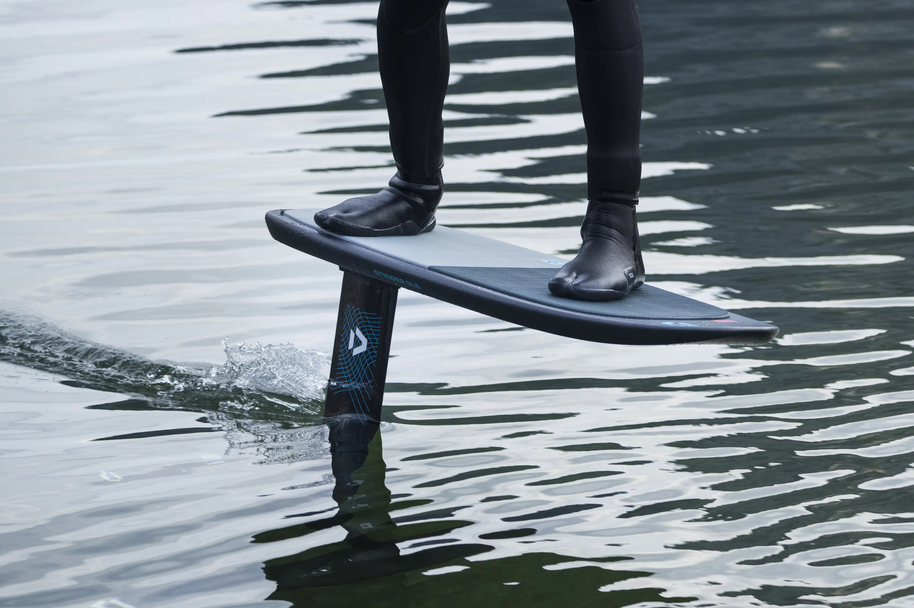
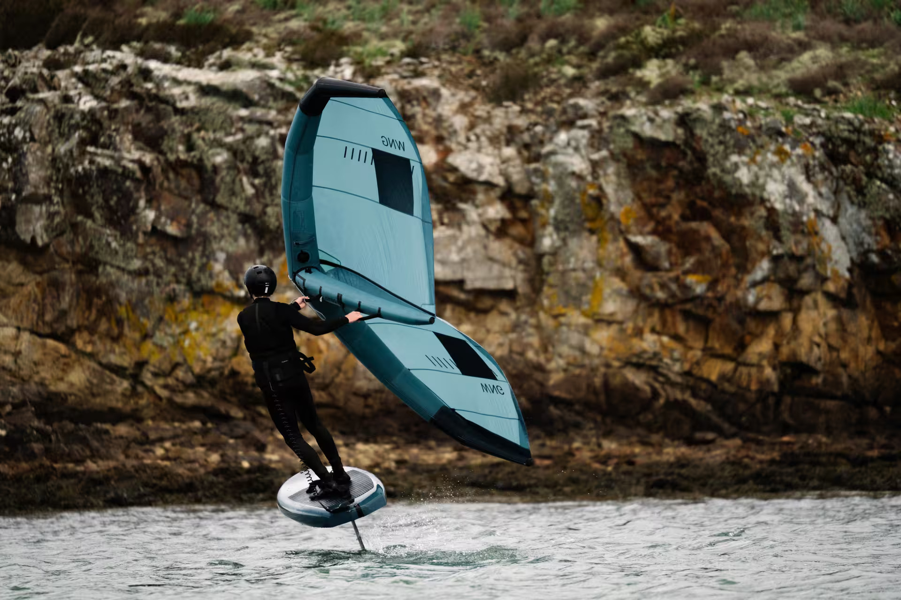

Pumpfoil (også kalt dock start eller flatwater foiling) går ut på å starte fra en brygge, strand eller dokk ved å hoppe direkte opp på et foilbrett uten å bruke verken seil, drakiting eller motor. Når du først er ute på vannet, opprettholder du farten og flyten ved å «pumpe» med kroppen – en rytmisk bevegelse der du bruker bein og kjerne til å flytte tyngdepunktet og generere løft fra foilen under vann. Det krever en god porsjon balanse, tajming og eksplosivitet i starten, men belønningen er følelsen av å «fly» over blikkstille vann uavhengig av om det blåser eller ikke.
Wingfoil (eller wing foiling) kombinerer elementer fra windsurfing, kiting og foiling ved at du står på et foilbrett mens du holder en oppblåsbar, håndholdt vinge («wing») for å fange vinden. Vingen er helt frikoblet fra brettet – du holder den direkte med hendene via håndtak eller en bom – noe som gir en enorm frihetsfølelse og gjør utstyret overraskende lett å styre. Så snart vinden gir deg nok fart, løftes brettet opp av foilen under vannflaten, og du «flyr» lydløst over vannet med minimal motstand.
